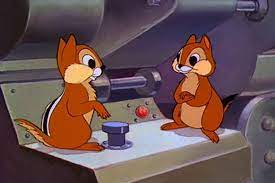
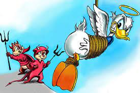
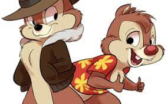

Чип и Дейл
Содержание:
История персонажа
Смешные приключения хвостатых спасателей по имени Чип и Дейл приковывали детей к телеэкранам в конце 80-ых годов. Грызуны вместе с разношерстыми друзьями бросались на помощь к любому, кто оказался в беде, будь то животное или человек. Пушистых жителей Нью-Йорка стоит благодарить не только за мелкие достижения. Их лапам и умам принадлежит победа над чокнутым профессором, который пытался захватить власть на Земле.
История создания и экранизация
Парочка бурундуков впервые появились на экранах в 1943 году в мультфильме о собаке Плуто. Неугомонные животные всячески пакостили главному герою, при этом хвостатые непоседы ничем не отличались друг от друга. Впрочем, и имен у бурундуков еще не было. Характеры персонажей стали намечаться в следующей диснеевской многосерийной ленте – про Дональда Дака.
В этом мультфильме художники подарили Дейлу отличительные черты – красный нос и торчащие вперед зубы. Чип остался с черным носом, но заметно поумнел. Герои также засветились в эпизодах короткометражной анимационной картины «Рождественская история Микки».Имена бурундуки получили не с потолка. Чип и Дейл стали результатом каламбура: авторы поделили надвое фамилию Томаса Чиппендейла, английского мастера-мебельщика, творившего в 18 веке.
В конце 1980-ых годов креативная группа студии «Disney» задумалась над созданием нового мультсериала. На первых порах хотели позаимствовать героев из полнометражной картины «Спасатели» (1977), однако вовремя передумали – хотелось оригинальности и новых идей. И они нашлись. Аниматоры Тэд Стоун и Алан Заслов предложили создать мультфильм о спасателях, где главарем станет мышь по имени Кит Колби. Увы, главного героя забраковали продюсеры. Тогда создатели проекта обратились к «ветеранам» голубых экранов – Чипу и Дейлу. Персонажи пережили глобальную переработку. Первое, что сделали художники, так это одели бурундуков: Чип нацепил летную куртку на меху и фетровую шляпу, Дейл красовался в цветастой «гавайской» рубахе. Герои обрели яркие характеры, а местом их приключений стал Нью-Йорк. Шустрых героев озвучили актеры Кори Бертон (Дейл) и Тресс Макнилл (Чип). Для комичности голоса после записи убыстряли, а тональность делали выше. В России роли мультфильма дублировали Александр Леньков (Дейл) и Наталья Защипина (Чип).
Первые серии «Чип и Дейл спешат на помощь» создатели проекта презентовали весной 1989 года. Сериал побил все мыслимые рейтинги, стал популярнее даже цикла приключений «Утиные истории», стартовавшего на два года раньше. Поэтому авторы принялись снимать продолжение, и в итоге невероятные похождения хвостатой команды растянулись на 65 серий.
Образы и характеры
Антропоморфных бурундуков невозможно перепутать. Их отличает не только одежда, эти малыши еще и обладают собственной индивидуальностью. Серьезный и в какой-то степени ворчливый Чип возглавляет команду спасателей. Обожает детективы, особенно любит придуманного специально для мультика Шерлока Джонса, чье имя – микс Шерлока Холмса и Индианы Джонса. Кстати, куртка бурундука напоминает верхнюю одежду Индианы. Чип непреклонно выполняет возложенные на него обязанности, любое дело доводит до конца, пунктуален. На первый взгляд кажется типичным «сухарем», но при тесном знакомстве зритель понимает, что перед ним добродушный персонаж. Сердце лидера команды принадлежит Гаечке. Дейл – полная противоположность Чипа. Легкомысленный балагур и весельчак не прочь полениться, повалять дурака, к работе относится безответственно. Вместо «серьезных» детективов в его библиотеке комиксы, бурундук с удовольствием режется в видеоигры, его манят фильмы ужасов и ленты с научно-фантастической тематикой. Дейл никогда не откажется от сладких лакомств. Герои хоть и разные, но редко ссорятся, конкуренция проявляется лишь иногда, и то в основном в случаях общения с Гаечкой.
«Чип и Дейл спешат на помощь»
В первой серии мультфильма фигурируют только Чип с Дейлом, затем к героям постепенно присоединяются другие персонажи. Команда пополнилась Рокфором – огромная мышь мужского пола оказалась страстным любителем сыра. Вместе с этим толстяком явилась смешная зеленая муха по имени Вжик, ставшая незаменимым помощником кучки спасателей. И, наконец, к отважным животным присоединилась молодая и красивая мышь Гайка – изобретатель, механик и летчик.
Члены этой нестандартной команды, подвергая себя опасности, спасают людей и зверей от несправедливости и зла. На протяжении всего сериала персонажам противостоят как периодические, так и постоянные злодеи, среди которых полосатый кот-здоровяк Толстопуз, чокнутый ученый Нортон Нимнул, вынашивающий идею захватить мир, и лидер банды гангстеров по кличке Капоне. С Нимнулом зрители знакомятся в первой же серии. В поисках пропавшего котенка Чип и Дейл выходят на след сумасшедшего профессора, который отлавливает кошек, чтобы с их помощью добывать энергию для своего «Гигантского генератора».
Славные герои помогают всем. В копилке достижений необычной команды: спасение единственного яйца крестовой клуши, предотвращение убийства медведя-гризли, возвращение бельчат маме-белке, вызволение из плена звезды телесериала – собаки Флэша, предотвращение кражи бриллианта и многое другое. Хвостатым спасателям довелось поиграть в шпионов («Бурундуки на секретной службе»), пожить на необитаемом острове (серия «Жертвы кораблекрушения») и даже встретиться нос к носу с ведьмой (серия «Мой друг – летучая мышь»). Захватывающие приключения непременно заканчиваются победой команды.
Интересные факты
В зените славы бурундуки превратились в героев двух видеоигр: «Chip ’n Dale: Rescue Rangers» и «Chip ’n Dale: Rescue Rangers 2». Кроме того, приключения хвостатых спасателей увидели свет в формате комиксов. Ресурс «IGN» отвел мультику «Чип и Дейл спешат на помощь» 60 место в рейтинге «100 лучших анимационных телешоу».В 2014 году поклонники находчивых мультяшных героев получили радостную весть: «Disney» и «Mandeville Films» объявили о подготовке к съемке полнометражного фильма по мотивам анимационного сериала. В новом проекте планировалось задействовать живых актеров, а компанию им составили бы персонажи, созданные в технике компьютерной графики. Студии даже назвали имена продюсеров - Дэвид Хоберман и Тодд Либерман, однако пока дата выхода фильма не известна.
Цитаты
- О, самые свежайшие фрукты! Еще шевелятся!
- Похоже, у нашего Дейла крышу снесло!
- Да у него всегда клепки не хватало!
- Давай так: ты тащишь, а я толкаю.
- Почему мы всегда все должны делать только по-твоему?
- Ладно, пусть будет по-твоему: я толкаю, а ты тащишь.
- Вот это другое дело
- Спасибо, Дейл! Прости, что я накричал на тебя!
- Порядок, Чип! Если б меня не было, на кого бы ты кричал?
- Но мы никогда не ссоримся!
- Конечно! Только у нас не всегда совпадают взгляды.